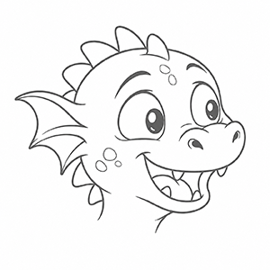
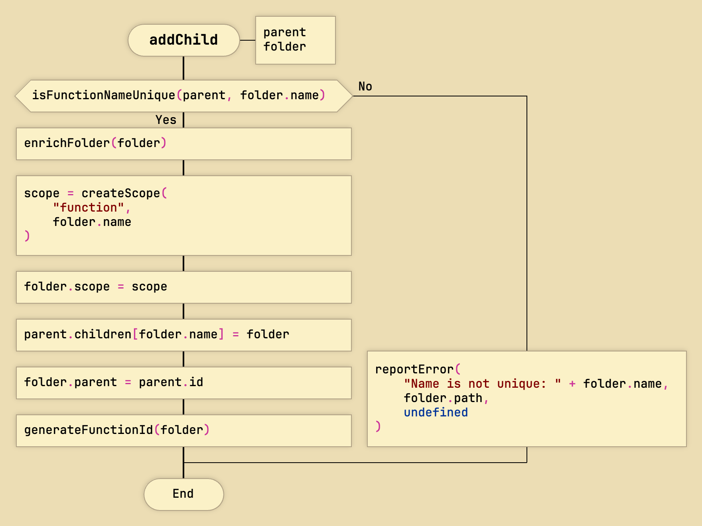
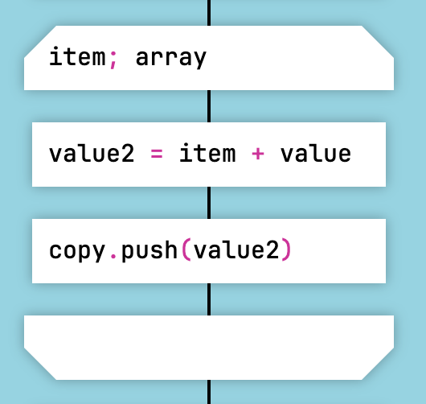
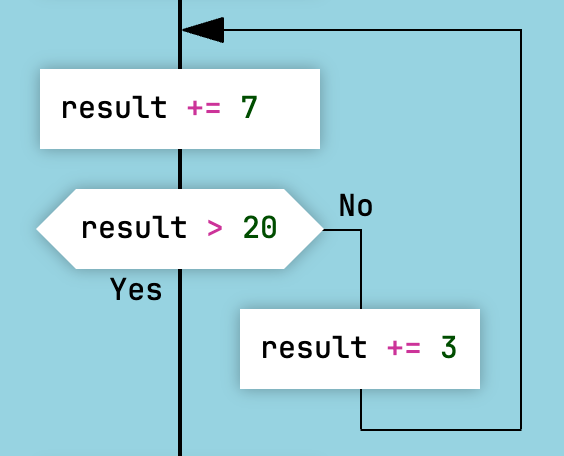
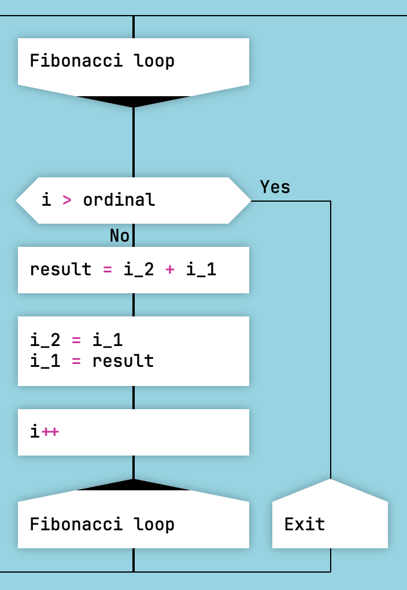

DrakonTech

DrakonTech is an experimental development environment that generates source code from flowcharts in the DRAKON visual language.
DrakonTech works as follows: you create diagrams, and the code generator transforms those diagrams into functions in the target programming language.

A DrakonTech project consists of many diagrams. Each diagram is transformed into a function. DrakonTech saves these functions in a source code file that you can include in your program.
Supported Languages
DrakonTech generates source code in several programming languages:
- JavaScript
- Lua
- C
- Clojure
- Perfolenta.Net
- OneScript / 1C:Enterprise
- Kumir
DrakonTech was used to develop the DrakonWidget library and the applications DrakonHub and DrakonPro.
For some programming languages, such as JavaScript and Lua, DrakonTech generates not only functions but also classes and finite-state machines.
Advantages of the DRAKON Language
The problem with ordinary flowcharts is that drawing them requires artistic talent. Without that talent, a flowchart can easily turn into a tangled mess of arrows.
To avoid this problem, flowcharts in DrakonTech are built according to the rules of the DRAKON visual language. Thanks to these rules, diagrams are cleaner and more organized. For example, DRAKON prohibits one of the biggest problems of traditional flowcharts: crossing lines.
More importantly, DRAKON diagrams are predictable. For example, algorithm steps always go from top to bottom, and branching always goes to the right. This predictability makes it easier to understand the algorithm itself because there is no need to decipher the diagram's structure. All DRAKON diagrams follow a similar structure. You can read more about DRAKON here.
Ultra-Fast Flowchart Editor
The key feature of DrakonTech is a flowchart editor that builds diagrams automatically. The user does not draw. The editor draws the diagram. The user only specifies where to place the next element or where to switch a connecting line. The editor arranges diagram elements on the canvas automatically.
In addition, you can copy, cut, and paste not only individual elements but entire sections of a diagram. The editor preserves the integrity of the diagram. You never end up with a dangling arrow pointing nowhere.
Eliminating Pixel Hunting
And of course, DrakonTech completely eliminates so-called pixel hunting—the frustration of trying to connect diagram elements precisely using tiny mouse movements. In DrakonTech, the user simply clicks, and the diagram grows by itself.
Automatic Enforcement of DRAKON Rules
You do not need to memorize the DRAKON language to use DrakonTech. DrakonTech knows the DRAKON rules and automatically ensures that your diagrams follow them.
Working with Large Projects
In addition to the flowchart editor itself, DrakonTech provides tools for working with large projects. Thanks to the project tree and folders, a DrakonTech project can contain hundreds or even thousands of diagrams. There is also search and replace, go to definition, and find references. In other words, DrakonTech is not just a drawing tool—it is a development environment.
Programming in DrakonTech
Programming in the DRAKON visual language with DrakonTech works as follows. First, you insert empty elements into a diagram. Then you write small pieces of linear code inside those elements. You do not need to write if statements or loop statements—the structure of the DRAKON diagram handles that.
The code fragments are written in the selected programming language, for example JavaScript. In that case, you are programming in the hybrid language DRAKON-JavaScript.
DRAKON provides visual equivalents for the main structured programming constructs:
- For "if–else" — the "Question" icon.
- For "switch–case" — the "Select" icon.
- For "for", "foreach", and "while" — the "For Loop" icon, the Arrow Loop, and the Silhouette Loop.

The "Question" icon

The "Select" icon

The "For Loop" icon

Arrow Loop

Silhouette Loop
Thus, DRAKON expresses branching and loops visually. Program logic becomes easier to read because every possible path through the algorithm can be traced with a finger. This is visual and much easier to understand than source code, where structure is represented only by indentation.
Understandable Software
The main goal of DrakonTech is to make software easier to understand. With DrakonTech, you create programs as organized visual structures. This helps other people understand your software. And not only other people—even you will be able to understand your own program after a long break.